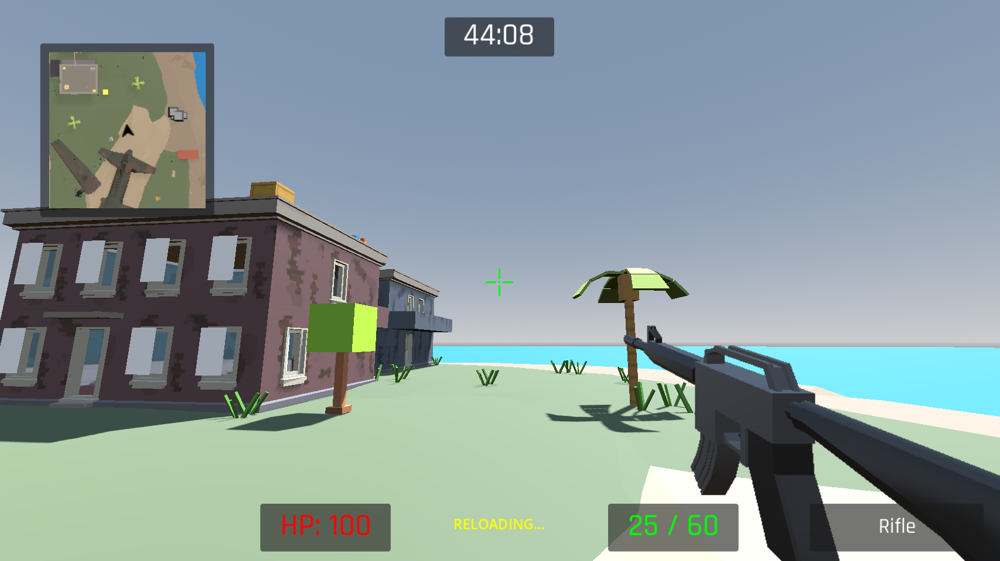
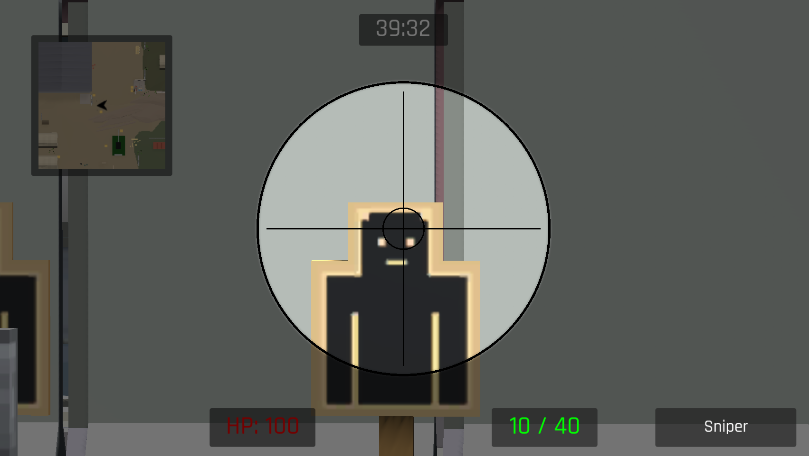
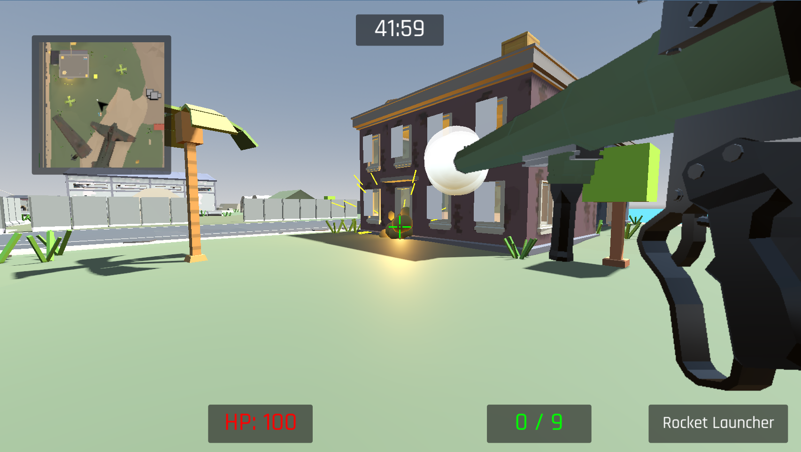
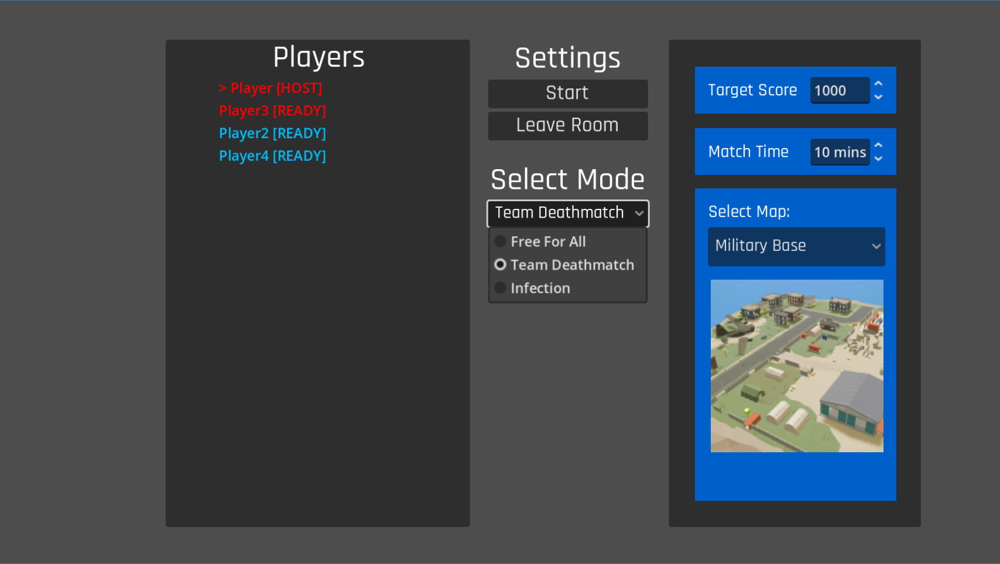
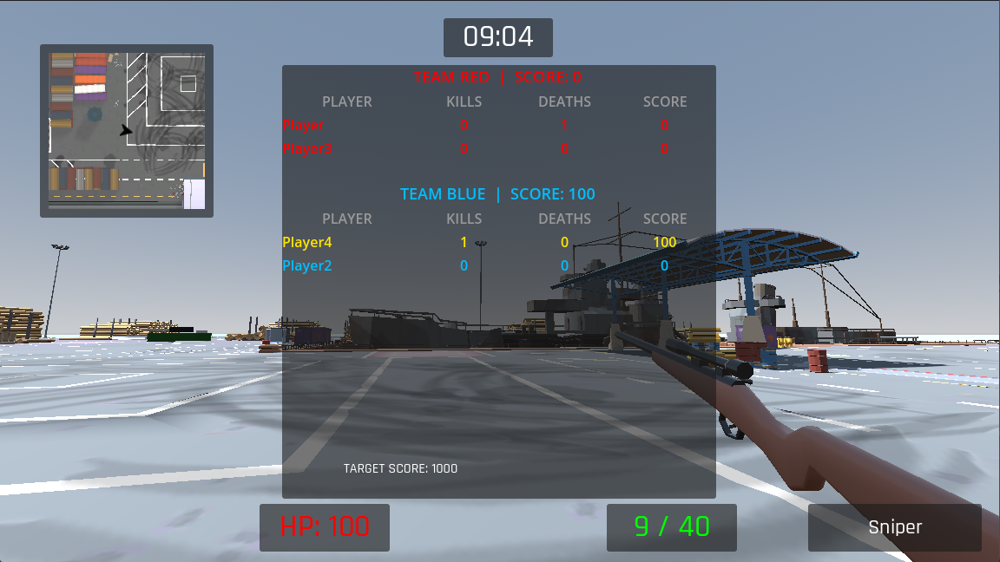

Multiplayer FPS
Godot / GDScript.
Game Programmer internship contributions: weapon tuning, game modes, spawn systems, and readable combat feedback in a 3D multiplayer FPS.
- Role
- Game Programmer
- Period
- Jan–May 2026
- Tech
- Godot · GDScript
- Network
- ENet · RPC
Project overview.
During my Game Programmer internship at Koei Tecmo Software Vietnam (January–May 2026), I collaborated on a 3D multiplayer first-person shooter developed in Godot.

Gameplay systems.
Networking
Implemented host-authoritative multiplayer with ENet and RPCs to synchronize player movement, health, and match state for sessions of up to eight players.
Weapons
Implemented and tuned six weapons, adjusting fire rate, recoil, aiming zoom, and hit-zone damage multipliers in response to gameplay requirements.
Modes and spawning
Implemented Free-for-All, Team Deathmatch, and Infection, including mode-specific spawning across three maps to support match pacing and reduce spawn trapping.
Combat feedback
Built HUD elements including minimap, scoreboard, ammo and health displays, as well as damage overlays, kill announcements, and synchronized audiovisual feedback.
Gameplay & interface.
Screenshots from the team project illustrate weapon interactions, game modes, and combat feedback. My contributions are described above. Select an image to view it at full size.




Design & implementation.
Gameplay decisions
Weapon feel, spawn locations, combat pacing, and clarity of information delivered to players.
Implementation practices
Finite state machines, component-based patterns, event-bus communication, and host-authoritative synchronization.